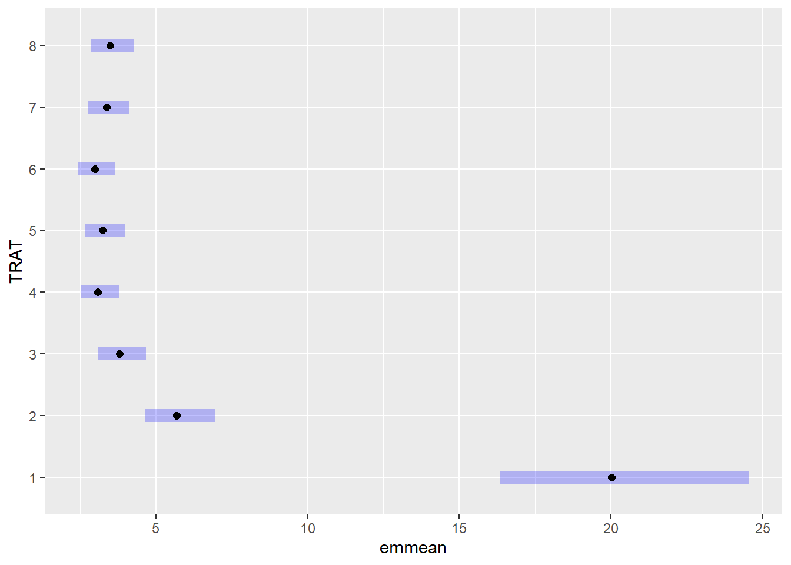

# A tibble: 6 × 3
especie rep tcm
<chr> <dbl> <dbl>
1 Fasi 1 1.5
2 Fasi 2 1.59
3 Fasi 3 1.52
4 Fasi 4 1.52
5 Fasi 5 1.6
6 Fasi 6 1.7 ANOVA (Análise de Variância)
É um teste estatístico utilizado para comparar as médias de três ou mais grupos e verificar se há diferenças estatisticamente significativas entre elas. Ao invés de comparar pares de médias individualmente, como no teste t, a ANOVA avalia simultaneamente a variabilidade entre os grupos e dentro dos grupos.
A ANOVA usa o teste F para testar a hipótese nula de que as médias populacionais são iguais contra a hipótese alternativa de que pelo menos uma média é diferente das demais.
Anova com 1 fator (One-way Anova)
É uma técnica estatística utilizada para comparar as médias de três ou mais grupos que diferem em relação a um único fator (ou variável independente). Esse fator pode representar, por exemplo, diferentes tratamentos, cultivares, doses de um produto ou condições experimentais.
O objetivo é verificar se há diferença significativa entre as médias dos grupos. A hipótese nula assume que todas as médias são iguais, enquanto a hipótese alternativa indica que pelo menos uma delas é diferente.
Exemplo: Experimento com um fator e em delineamento inteiramente casualizado (DIC) para comparar o crescimento micelial de diferentes espécies de um fungo fitopatogênico. A resposta a ser estudada é a TCM = taxa de crescimento micelial.
Importando o conjunto de dados:
Carregando pacotes:
Visualização dos dados:
Modelo usando aov()
Para verificar os dados usando anova, um novo modelo para atribuir a função aov() contendo os argumentos tratamento em função da variável resposta deve ser criado (ex.: tcm ~ espécie), o banco de dados referido deve ser enunciado após o argumento separado por vírgula seguido do nome data = nome do conjunto de dados (ex.: micelial). Depois disso, pede um quadro de resumo do novo modelo criado.
Df Sum Sq Mean Sq F value Pr(>F)
especie 4 1.4696 0.3674 19.63 2.03e-07 ***
Residuals 25 0.4679 0.0187
---
Signif. codes: 0 '***' 0.001 '**' 0.01 '*' 0.05 '.' 0.1 ' ' 1
Call:
lm(formula = tcm ~ especie, data = micelial)
Coefficients:
(Intercept) especieFaus especieFcor especieFgra especieFmer
1.572 -0.335 -0.250 -0.660 -0.145 Testando as premissas
Testes de Normalidade e Homocedasticidade
Teste de Normalidade
A normalidade dos dados é uma condição importante para muitos testes estatísticos. Ela garante que os resultados das análises, como ANOVA e teste t, sejam confiáveis, pois esses métodos assumem que os dados vêm de uma população com distribuição normal.
Teste de Homocedasticidade
Na ANOVA, é necessário que os grupos comparados tenham variâncias semelhantes. Essa condição é chamada de homocedasticidade. Se as variâncias forem muito diferentes (heterocedasticidade), os resultados do teste F podem ser comprometidos.
Para testar as premissas, é necessário instalar e carregar o pacote performance e o pacote DHARMa.
O pacote performance permite checar as premissas (check_), já o pacote DHARMA (Distributed Hierarchical Accumulation of Residuals for Generalized Linear Models in R) é para visualizar os dados pelo diagnóstico do resíduo. O pacote DHARMa permite faz uma comparação dos resíduos simulados, que são gerados pelo pacote, com os resíduos observados e ver graficamente quando a distribuição dos dados não é normal e/ou quando há variação heterocedástica.
Após isso, deve-se fazer o teste de normalidade dos resíduos com a interação entre a anova e os resíduos.
OK: Error variance appears to be homoscedastic (p = 0.880).

Shapiro-Wilk normality test
data: aov1$residuals
W = 0.9821, p-value = 0.8782O teste verifica a seguinte hipótese:
Hipótese nula (H₀): Os dados seguem distribuição normal;
Hipótese alternativa (H₁): Os dados não seguem distribuição normal.
Comparamos o p-valor com um nível de significância comum, geralmente α = 0,05:
p-valor = 0,8782 > 0,05 → Não rejeitamos a hipótese nula
Homogeneidade de variâncias:
Code
Bartlett test of homogeneity of variances
data: tcm by especie
Bartlett's K-squared = 4.4367, df = 4, p-value = 0.3501Interpretação dos Resultados:
p-valor > 0,05 → Não há evidência de variâncias diferentes → Premissa atendida.
p-valor < 0,05 → As variâncias são significativamente diferentes → Premissa violada.
Comparações múltiplas e médias ajustadas
Pacote “emmeans”
(“estimated marginal means”, ou médias marginais estimadas) é usado para realizar testes de comparação de médias entre grupos, ajustando para outros fatores importantes que podem influenciar as médias. O pacote é particularmente útil em modelos lineares generalizados (GLM).
emmeans(...): calcula as médias ajustadas (médias marginais) para cada grupo de especie com base no modelo.
Importante para comparações entre grupos quando há mais de 2 níveis.
especie emmean SE df lower.CL upper.CL
Fasi 1.572 0.0559 25 1.457 1.69
Faus 1.237 0.0559 25 1.122 1.35
Fcor 1.322 0.0559 25 1.207 1.44
Fgra 0.912 0.0559 25 0.797 1.03
Fmer 1.427 0.0559 25 1.312 1.54
Confidence level used: 0.95 Testes post-hoc (comparações entre grupos)
Pacote “multcomp” - multcomp: para fazer comparações múltiplas entre grupos.
Testes simultâneos e intervalos de confiança para hipóteses lineares gerais em modelos paramétricos, incluindo efeitos lineares, lineares generalizados, lineares mistos e modelos de sobrevivência.
Pacote “multcompView” - multcompView: para gerar letras compactas, indicando quais grupos são diferentes.
Converte um vetor lógico ou um vetor de valores-p ou uma matriz de correlação, diferença ou distância em uma exibição identificando os pares para os quais as diferenças não foram significativamente diferentes.
Cld - Extrai e exibe informações sobre todas as comparações pareadas de médias de mínimos quadrados.
especie emmean SE df lower.CL upper.CL .group
Fgra 0.912 0.0559 25 0.797 1.03 1
Faus 1.237 0.0559 25 1.122 1.35 2
Fcor 1.322 0.0559 25 1.207 1.44 2
Fmer 1.427 0.0559 25 1.312 1.54 23
Fasi 1.572 0.0559 25 1.457 1.69 3
Confidence level used: 0.95
P value adjustment: tukey method for comparing a family of 5 estimates
significance level used: alpha = 0.05
NOTE: If two or more means share the same grouping symbol,
then we cannot show them to be different.
But we also did not show them to be the same. contrast estimate SE df t.ratio p.value
Fasi - Faus 0.335 0.079 25 4.241 0.0023
Fasi - Fcor 0.250 0.079 25 3.165 0.0302
Fasi - Fgra 0.660 0.079 25 8.356 <.0001
Fasi - Fmer 0.145 0.079 25 1.836 0.3765
Faus - Fcor -0.085 0.079 25 -1.076 0.8169
Faus - Fgra 0.325 0.079 25 4.115 0.0031
Faus - Fmer -0.190 0.079 25 -2.405 0.1469
Fcor - Fgra 0.410 0.079 25 5.191 0.0002
Fcor - Fmer -0.105 0.079 25 -1.329 0.6761
Fgra - Fmer -0.515 0.079 25 -6.520 <.0001
P value adjustment: tukey method for comparing a family of 5 estimates Fasi Faus Fcor Fgra Fmer
Fasi [1.572] 0.0023 0.0302 <.0001 0.3765
Faus 0.335 [1.237] 0.8169 0.0031 0.1469
Fcor 0.250 -0.085 [1.322] 0.0002 0.6761
Fgra 0.660 0.325 0.410 [0.912] <.0001
Fmer 0.145 -0.190 -0.105 -0.515 [1.427]
Row and column labels: especie
Upper triangle: P values adjust = "tukey"
Diagonal: [Estimates] (emmean)
Lower triangle: Comparisons (estimate) earlier vs. laterANOVA fatorial (two-way ANOVA)
A ANOVA fatorial é utilizada quando há duas ou mais variáveis independentes (fatores), cada uma com dois ou mais níveis. Ela é apropriada para experimentos fatoriais completos, nos quais todas as combinações possíveis entre os níveis dos fatores são testadas. Além de avaliar os efeitos individuais de cada fator, essa análise também permite verificar se existe interação entre os fatores, ou seja, se o efeito de um fator depende dos níveis do outro.
Importando o conjunto de dados:
Banco de dados utilizado: fungicida-vaso (conjunto de dados do dados diversos). Objeto nomeado como fung_vaso.
factor(dose): converte a variável dose em fator (categórica);
severity * 100: transforma a variável de severidade em percentual;
geom_jitter(): mostra os pontos com leve deslocamento horizontal, evitando sobreposição;
facet_wrap(~ treat): separa os gráficos por tratamento (treat).
Modelo linear com interação
Analysis of Variance Table
Response: severity
Df Sum Sq Mean Sq F value Pr(>F)
treat 1 0.113232 0.113232 30.358 4.754e-05 ***
dose 1 0.073683 0.073683 19.755 0.0004077 ***
treat:dose 1 0.072739 0.072739 19.502 0.0004326 ***
Residuals 16 0.059678 0.003730
---
Signif. codes: 0 '***' 0.001 '**' 0.01 '*' 0.05 '.' 0.1 ' ' 1Checagem das premissas e visualização com DHARMa:

Médias ajustadas com emmeans
dose = 0.5:
treat emmean SE df lower.CL upper.CL
Ionic liquid 0.2921 0.0273 16 0.23420 0.3500
Tebuconazole 0.0210 0.0273 16 -0.03690 0.0789
dose = 2.0:
treat emmean SE df lower.CL upper.CL
Ionic liquid 0.0501 0.0273 16 -0.00781 0.1080
Tebuconazole 0.0202 0.0273 16 -0.03768 0.0781
Confidence level used: 0.95 Comparações múltiplas
dose = 0.5:
treat emmean SE df lower.CL upper.CL .group
Tebuconazole 0.0210 0.0273 16 -0.03690 0.0789 1
Ionic liquid 0.2921 0.0273 16 0.23420 0.3500 2
dose = 2.0:
treat emmean SE df lower.CL upper.CL .group
Tebuconazole 0.0202 0.0273 16 -0.03768 0.0781 1
Ionic liquid 0.0501 0.0273 16 -0.00781 0.1080 1
Confidence level used: 0.95
significance level used: alpha = 0.05
NOTE: If two or more means share the same grouping symbol,
then we cannot show them to be different.
But we also did not show them to be the same. Agora inverte: médias de doses dentro de tratamentos
treat = Ionic liquid:
dose emmean SE df lower.CL upper.CL
0.5 0.2921 0.0273 16 0.23420 0.3500
2.0 0.0501 0.0273 16 -0.00781 0.1080
treat = Tebuconazole:
dose emmean SE df lower.CL upper.CL
0.5 0.0210 0.0273 16 -0.03690 0.0789
2.0 0.0202 0.0273 16 -0.03768 0.0781
Confidence level used: 0.95 treat = Ionic liquid:
dose emmean SE df lower.CL upper.CL .group
2.0 0.0501 0.0273 16 -0.00781 0.1080 1
0.5 0.2921 0.0273 16 0.23420 0.3500 2
treat = Tebuconazole:
dose emmean SE df lower.CL upper.CL .group
2.0 0.0202 0.0273 16 -0.03768 0.0781 1
0.5 0.0210 0.0273 16 -0.03690 0.0789 1
Confidence level used: 0.95
significance level used: alpha = 0.05
NOTE: If two or more means share the same grouping symbol,
then we cannot show them to be different.
But we also did not show them to be the same. Coeficiente de variação
Essa função do pacote agricolae calcula o coeficiente de variação (CV%) do modelo.
Ajuda a avaliar a precisão experimental. Valores abaixo de 20% geralmente são considerados bons (mas depende do contexto).
E se não houver interação significativa?
Mostra os efeitos individuais de dose e tratamento, ignorando a interação.
Visualização da interação
Gera um gráfico de interação;
Se as linhas forem paralelas, não há interação;
Se forem cruzadas ou afastadas, pode indicar interação.
Tabela
| 0.5 | 0.2 | |
|---|---|---|
| LI | 29.2 Aa | 5.0 Ab |
| TEBU | 2.1 Ba | 2.0 Aa |
| cv = 63% |
Exemplo:
Pacote epifitter e dados:
Visualização dos dados filtrados
Filtra apenas 3 tipos de irrigação.
sev*100: transforma a severidade (que vai de 0 a 1) para percentual (0–100%).
facet_grid(moisture ~ irrigation_type): cria um painel com um gráfico para cada combinação de moisture (umidade) e irrigation_type (tipo de irrigação).
O gráfico mostra como a doença evolui ao longo do tempo (time).
Cálculo da AUDPC (Área Abaixo da Curva de Progresso da Doença)
group_by(...) agrupa os dados por tratamento (irrigação, umidade e bloco);
AUDPC(...) calcula a área abaixo da curva para cada grupo;
A AUDPC resume a intensidade da doença ao longo do tempo.
Visualizando a AUDPC
ANOVA fatorial (efeito da irrigação e umidade na AUDPC)
Code
Analysis of Variance Table
Response: AUDPC
Df Sum Sq Mean Sq F value Pr(>F)
irrigation_type 2 134.341 67.170 451.721 5.073e-12 ***
moisture 1 6.680 6.680 44.924 2.188e-05 ***
irrigation_type:moisture 2 5.104 2.552 17.162 0.0003022 ***
Residuals 12 1.784 0.149
---
Signif. codes: 0 '***' 0.001 '**' 0.01 '*' 0.05 '.' 0.1 ' ' 1Diagnóstico do modelo
Médias ajustadas com emmeans
moisture = High moisture:
irrigation_type emmean SE df lower.CL upper.CL
MS 8.52 0.223 12 8.04 9.01
MS above canopy 3.99 0.223 12 3.51 4.48
Overhead 3.68 0.223 12 3.20 4.17
moisture = Moderate moisture:
irrigation_type emmean SE df lower.CL upper.CL
MS 11.18 0.223 12 10.70 11.67
MS above canopy 4.86 0.223 12 4.37 5.34
Overhead 3.81 0.223 12 3.33 4.30
Confidence level used: 0.95 moisture = High moisture:
irrigation_type emmean SE df lower.CL upper.CL .group
Overhead 3.68 0.223 12 3.20 4.17 1
MS above canopy 3.99 0.223 12 3.51 4.48 1
MS 8.52 0.223 12 8.04 9.01 2
moisture = Moderate moisture:
irrigation_type emmean SE df lower.CL upper.CL .group
Overhead 3.81 0.223 12 3.33 4.30 1
MS above canopy 4.86 0.223 12 4.37 5.34 2
MS 11.18 0.223 12 10.70 11.67 3
Confidence level used: 0.95
P value adjustment: tukey method for comparing a family of 3 estimates
significance level used: alpha = 0.05
NOTE: If two or more means share the same grouping symbol,
then we cannot show them to be different.
But we also did not show them to be the same. Agora, inverte: mostra as médias de umidade dentro de cada tipo de irrigação.
irrigation_type = MS:
moisture emmean SE df lower.CL upper.CL
High moisture 8.52 0.223 12 8.04 9.01
Moderate moisture 11.18 0.223 12 10.70 11.67
irrigation_type = MS above canopy:
moisture emmean SE df lower.CL upper.CL
High moisture 3.99 0.223 12 3.51 4.48
Moderate moisture 4.86 0.223 12 4.37 5.34
irrigation_type = Overhead:
moisture emmean SE df lower.CL upper.CL
High moisture 3.68 0.223 12 3.20 4.17
Moderate moisture 3.81 0.223 12 3.33 4.30
Confidence level used: 0.95 irrigation_type = MS:
moisture emmean SE df lower.CL upper.CL .group
High moisture 8.52 0.223 12 8.04 9.01 1
Moderate moisture 11.18 0.223 12 10.70 11.67 2
irrigation_type = MS above canopy:
moisture emmean SE df lower.CL upper.CL .group
High moisture 3.99 0.223 12 3.51 4.48 1
Moderate moisture 4.86 0.223 12 4.37 5.34 2
irrigation_type = Overhead:
moisture emmean SE df lower.CL upper.CL .group
High moisture 3.68 0.223 12 3.20 4.17 1
Moderate moisture 3.81 0.223 12 3.33 4.30 1
Confidence level used: 0.95
significance level used: alpha = 0.05
NOTE: If two or more means share the same grouping symbol,
then we cannot show them to be different.
But we also did not show them to be the same. Coeficiente de variação do modelo
Indica a precisão do experimento - valores menores geralmente indicam maior confiabilidade
Tabela
| H. moisture | M. moisture | |
|---|---|---|
| MS | 8.52 Aa | 11.18 Ab |
| MS Ac. | 3.99 Ba | 4.86 Bb |
| Overhead | 3.68 Ba | 3.81 Ca |
| CV = 6.41 |
Anova Fatorial - 3 Fatores
Exemplo:
Dados sobre a interação entre tipo de armazenamento e umidade.
Code
Testar a interação entre o tipo de armazenamento e o tempo 8
Code
Df Sum Sq Mean Sq F value Pr(>F)
factor(tipo) 1 11215 11215 2375.8 3.64e-15 ***
factor(umidade) 2 42814 21407 4534.8 < 2e-16 ***
factor(tipo):factor(umidade) 2 2329 1165 246.7 1.79e-10 ***
Residuals 12 57 5
---
Signif. codes: 0 '***' 0.001 '**' 0.01 '*' 0.05 '.' 0.1 ' ' 1Testanto tipo de inoculação na incidencia de Fusarium sp. em milho
Code
Df Sum Sq Mean Sq F value Pr(>F)
hybrid 5 105876446 21175289 8.312 2.66e-05 ***
method 1 42951 42951 0.017 0.897
hybrid:method 5 10619453 2123891 0.834 0.534
Residuals 36 91709593 2547489
---
Signif. codes: 0 '***' 0.001 '**' 0.01 '*' 0.05 '.' 0.1 ' ' 1Checagem das premissas
Médias ajustadas com emmeans
hybrid emmean SE df lower.CL upper.CL
30F53 HX 10598 564 36 9453 11742
30F53 YH 9309 564 36 8165 10454
30K64 11018 564 36 9874 12162
30S31H 8652 564 36 7507 9796
30S31YH 8056 564 36 6912 9201
BG7049H 12402 564 36 11257 13546
Results are averaged over the levels of: method
Confidence level used: 0.95 hybrid emmean SE df lower.CL upper.CL .group
30S31YH 8056 564 36 6912 9201 1
30S31H 8652 564 36 7507 9796 12
30F53 YH 9309 564 36 8165 10454 12
30F53 HX 10598 564 36 9453 11742 23
30K64 11018 564 36 9874 12162 23
BG7049H 12402 564 36 11257 13546 3
Results are averaged over the levels of: method
Confidence level used: 0.95
P value adjustment: tukey method for comparing a family of 6 estimates
significance level used: alpha = 0.05
NOTE: If two or more means share the same grouping symbol,
then we cannot show them to be different.
But we also did not show them to be the same. Caso a interação não dê sifnificativa, tira a interação e deixa só o fator que teve significancia (isola o fator)
Df Sum Sq Mean Sq F value Pr(>F)
hybrid 5 105876446 21175289 8.688 1.02e-05 ***
Residuals 42 102371996 2437428
---
Signif. codes: 0 '***' 0.001 '**' 0.01 '*' 0.05 '.' 0.1 ' ' 1 Df Sum Sq Mean Sq F value Pr(>F)
hybrid 5 105876446 21175289 8.688 1.02e-05 ***
Residuals 42 102371996 2437428
---
Signif. codes: 0 '***' 0.001 '**' 0.01 '*' 0.05 '.' 0.1 ' ' 1 hybrid emmean SE df lower.CL upper.CL
30F53 HX 10598 552 42 9484 11712
30F53 YH 9309 552 42 8195 10423
30K64 11018 552 42 9904 12132
30S31H 8652 552 42 7538 9765
30S31YH 8056 552 42 6942 9170
BG7049H 12402 552 42 11288 13516
Confidence level used: 0.95 hybrid emmean SE df lower.CL upper.CL .group
30S31YH 8056 552 42 6942 9170 1
30S31H 8652 552 42 7538 9765 12
30F53 YH 9309 552 42 8195 10423 123
30F53 HX 10598 552 42 9484 11712 234
30K64 11018 552 42 9904 12132 34
BG7049H 12402 552 42 11288 13516 4
Confidence level used: 0.95
P value adjustment: tukey method for comparing a family of 6 estimates
significance level used: alpha = 0.05
NOTE: If two or more means share the same grouping symbol,
then we cannot show them to be different.
But we also did not show them to be the same. 30F53 HX 30F53 YH 30K64 30S31H 30S31YH BG7049H
30F53 HX [10598] 0.5709 0.9942 0.1494 0.0254 0.2125
30F53 YH 1288 [ 9309] 0.2643 0.9576 0.5999 0.0036
30K64 -420 -1709 [11018] 0.0447 0.0059 0.4938
30S31H 1946 658 2366 [ 8652] 0.9723 0.0003
30S31YH 2541 1253 2962 595 [ 8056] <.0001
BG7049H -1804 -3092 -1384 -3750 -4345 [12402]
Row and column labels: hybrid
Upper triangle: P values adjust = "tukey"
Diagonal: [Estimates] (emmean)
Lower triangle: Comparisons (estimate) earlier vs. laterANOVA com bloco
Anova com bloco - Delineamento em Blocos Casualizado (DBC)
O (DBC) envolve os três princípios da experimentação: repetição, casualização e controle local. Neste caso, as condições locais não são homogêneas e podem ter efeito significativo sobre os tratamentos.
Carregando pacotes e dados
Usando o conjunto de dados fungicida_campo
Gráfico de produção por tratamento
mutate(TRAT = factor(TRAT)): transforma os tratamentos (TRAT) em fatores para garantir que o ggplot os trate como categorias.
geom_jitter: mostra os dados de cada parcela/bloco, deslocados horizontalmente para evitar sobreposição.
stat_summary(fun.data = "mean_cl_boot"): adiciona médias com intervalos de confiança via bootstrap.
Convertendo variáveis em fatores
Aqui, você transforma TRAT e BLOCO explicitamente em fatores, pois o R trata números como contínuos por padrão.
Modelo Anova com bloco
ANOVA com efeito de blocos e tratamentos:
Analysis of Variance Table
Response: PROD
Df Sum Sq Mean Sq F value Pr(>F)
BLOCO 3 105716 35239 0.2172 0.8833
TRAT 7 2994142 427735 2.6369 0.0402 *
Residuals 21 3406384 162209
---
Signif. codes: 0 '***' 0.001 '**' 0.01 '*' 0.05 '.' 0.1 ' ' 1Checagem das premissas
OK: residuals appear as normally distributed (p = 0.542).OK: Error variance appears to be homoscedastic (p = 0.216).
Estimativa e comparação das médias dos tratamentos
TRAT emmean SE df lower.CL upper.CL
1 4219 201 21 3800 4638
2 4935 201 21 4516 5354
3 5110 201 21 4691 5529
4 5140 201 21 4722 5559
5 5122 201 21 4703 5541
6 5256 201 21 4838 5675
7 5128 201 21 4709 5546
8 5078 201 21 4659 5497
Results are averaged over the levels of: BLOCO
Confidence level used: 0.95 TRAT emmean SE df lower.CL upper.CL .group
1 4219 201 21 3800 4638 1
2 4935 201 21 4516 5354 12
8 5078 201 21 4659 5497 12
3 5110 201 21 4691 5529 12
5 5122 201 21 4703 5541 12
7 5128 201 21 4709 5546 12
4 5140 201 21 4722 5559 12
6 5256 201 21 4838 5675 2
Results are averaged over the levels of: BLOCO
Confidence level used: 0.95
P value adjustment: tukey method for comparing a family of 8 estimates
significance level used: alpha = 0.05
NOTE: If two or more means share the same grouping symbol,
then we cannot show them to be different.
But we also did not show them to be the same. 
1 2 3 4 5 6 7 8
1 [4219] 0.2431 0.0793 0.0639 0.0728 0.0272 0.0699 0.0985
2 -715.7 [4935] 0.9983 0.9953 0.9974 0.9429 0.9968 0.9995
3 -890.5 -174.8 [5110] 1.0000 1.0000 0.9994 1.0000 1.0000
4 -921.1 -205.4 -30.6 [5140] 1.0000 0.9999 1.0000 1.0000
5 -902.7 -187.0 -12.2 18.4 [5122] 0.9997 1.0000 1.0000
6 -1037.1 -321.4 -146.6 -116.0 -134.4 [5256] 0.9998 0.9981
7 -908.4 -192.7 -17.9 12.7 -5.7 128.7 [5128] 1.0000
8 -859.0 -143.3 31.5 62.1 43.7 178.0 49.4 [5078]
Row and column labels: TRAT
Upper triangle: P values adjust = "tukey"
Diagonal: [Estimates] (emmean)
Lower triangle: Comparisons (estimate) earlier vs. laterAnálise da Severidade da Ferrugem (FER):
ANOVA com transformação logarítmica
Analysis of Variance Table
Response: log(FER)
Df Sum Sq Mean Sq F value Pr(>F)
BLOCO 3 0.2064 0.06880 1.7961 0.1788
TRAT 7 11.5210 1.64585 42.9665 4.838e-11 ***
Residuals 21 0.8044 0.03831
---
Signif. codes: 0 '***' 0.001 '**' 0.01 '*' 0.05 '.' 0.1 ' ' 1Diagnóstico do modelo

Médias com back-transformation
TRAT response SE df lower.CL upper.CL .group
6 2.98 0.292 21 2.43 3.65 1
4 3.08 0.301 21 2.51 3.78 1
5 3.24 0.317 21 2.64 3.97 1
7 3.37 0.330 21 2.75 4.13 1
8 3.48 0.341 21 2.84 4.27 1
3 3.81 0.373 21 3.11 4.67 12
2 5.68 0.556 21 4.63 6.96 2
1 20.02 1.960 21 16.33 24.54 3
Results are averaged over the levels of: BLOCO
Confidence level used: 0.95
Intervals are back-transformed from the log scale
P value adjustment: tukey method for comparing a family of 8 estimates
Tests are performed on the log scale
significance level used: alpha = 0.05
NOTE: If two or more means share the same grouping symbol,
then we cannot show them to be different.
But we also did not show them to be the same. 

1 2 3 4 5 6 7 8
1 [20.02] <.0001 <.0001 <.0001 <.0001 <.0001 <.0001 <.0001
2 3.525 [ 5.68] 0.1252 0.0048 0.0110 0.0028 0.0204 0.0343
3 5.259 1.492 [ 3.81] 0.7832 0.9335 0.6440 0.9843 0.9976
4 6.500 1.844 1.236 [ 3.08] 0.9999 1.0000 0.9976 0.9842
5 6.178 1.753 1.175 0.951 [ 3.24] 0.9984 1.0000 0.9994
6 6.721 1.906 1.278 1.034 1.088 [ 2.98] 0.9842 0.9431
7 5.945 1.686 1.130 0.915 0.962 0.885 [ 3.37] 1.0000
8 5.750 1.631 1.093 0.885 0.931 0.856 0.967 [ 3.48]
Row and column labels: TRAT
Upper triangle: P values null = 1 adjust = "tukey"
Diagonal: [Estimates] (response) type = "response"
Lower triangle: Comparisons (ratio) earlier vs. laterDelineamento em parcela subdividida (Split-plot)
Importando o conjunto de dados:
Exemplo:
Visualizando os dados
Ajustando o modelo:
Code
Error: factor(block)
Df Sum Sq Mean Sq
factor(block) 3 592.2 197.4
Error: factor(block):hybrid
Df Sum Sq Mean Sq F value Pr(>F)
hybrid 5 974.2 194.84 3.14 0.0389 *
Residuals 15 930.9 62.06
---
Signif. codes: 0 '***' 0.001 '**' 0.01 '*' 0.05 '.' 0.1 ' ' 1
Error: factor(block):hybrid:method
Df Sum Sq Mean Sq F value Pr(>F)
method 1 79.61 79.61 4.726 0.0433 *
hybrid:method 5 265.28 53.06 3.150 0.0324 *
Residuals 18 303.18 16.84
---
Signif. codes: 0 '***' 0.001 '**' 0.01 '*' 0.05 '.' 0.1 ' ' 1Checagem das premissas
Em parcelas subdivididas não é possível checar as premissas pelo check_, então usa lme4, para checar pelo modelo misto.
Pacote “lme4”
Ajusta modelos de efeitos mistos lineares e lineares generalizados. Os modelos e seus componentes são representados usando classes e métodos S4.
Função “lmer”
Gera um componente aleatório que é específico a cada indivíduo, de modo que podemos ter, para cada um, um intercepto e uma inclinação distintas.
Code
Analysis of Deviance Table (Type II Wald chisquare tests)
Response: index
Chisq Df Pr(>Chisq)
block 0.3192 3 0.956380
hybrid 15.6987 5 0.007759 **
method 4.7262 1 0.029706 *
hybrid:method 15.7498 5 0.007596 **
---
Signif. codes: 0 '***' 0.001 '**' 0.01 '*' 0.05 '.' 0.1 ' ' 1Necessário transformar os dados
Code
Analysis of Deviance Table (Type II Wald chisquare tests)
Response: sqrt(index)
Chisq Df Pr(>Chisq)
block 0.0764 3 0.994506
hybrid 15.4171 5 0.008721 **
method 3.9239 1 0.047605 *
hybrid:method 13.3025 5 0.020703 *
---
Signif. codes: 0 '***' 0.001 '**' 0.01 '*' 0.05 '.' 0.1 ' ' 1Checagem
Comparação de médias
method = pin:
hybrid emmean SE df lower.CL upper.CL
30F53 HX 5.00 1.17 5356 2.69 7.30
30F53 YH 4.95 1.17 5356 2.65 7.25
30K64 4.50 1.17 5356 2.20 6.81
30S31H 6.10 1.17 5356 3.79 8.40
30S31YH 5.63 1.17 5356 3.33 7.93
BG7049H 4.40 1.17 5356 2.10 6.71
method = silk:
hybrid emmean SE df lower.CL upper.CL
30F53 HX 4.94 1.17 5356 2.64 7.25
30F53 YH 5.10 1.17 5356 2.80 7.41
30K64 4.61 1.17 5356 2.31 6.91
30S31H 5.13 1.17 5356 2.83 7.43
30S31YH 5.14 1.17 5356 2.84 7.44
BG7049H 4.37 1.17 5356 2.07 6.67
Results are averaged over the levels of: block
Degrees-of-freedom method: kenward-roger
Results are given on the sqrt (not the response) scale.
Confidence level used: 0.95 method = pin:
hybrid emmean SE df lower.CL upper.CL .group
BG7049H 4.40 1.17 5356 2.10 6.71 1
30K64 4.50 1.17 5356 2.20 6.81 1
30F53 YH 4.95 1.17 5356 2.65 7.25 12
30F53 HX 5.00 1.17 5356 2.69 7.30 12
30S31YH 5.63 1.17 5356 3.33 7.93 12
30S31H 6.10 1.17 5356 3.79 8.40 2
method = silk:
hybrid emmean SE df lower.CL upper.CL .group
BG7049H 4.37 1.17 5356 2.07 6.67 1
30K64 4.61 1.17 5356 2.31 6.91 1
30F53 HX 4.94 1.17 5356 2.64 7.25 1
30F53 YH 5.10 1.17 5356 2.80 7.41 1
30S31H 5.13 1.17 5356 2.83 7.43 1
30S31YH 5.14 1.17 5356 2.84 7.44 1
Results are averaged over the levels of: block
Degrees-of-freedom method: kenward-roger
Results are given on the sqrt (not the response) scale.
Confidence level used: 0.95
Note: contrasts are still on the sqrt scale. Consider using
regrid() if you want contrasts of back-transformed estimates.
P value adjustment: tukey method for comparing a family of 6 estimates
significance level used: alpha = 0.05
NOTE: If two or more means share the same grouping symbol,
then we cannot show them to be different.
But we also did not show them to be the same.